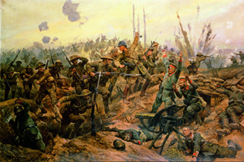

Lezione 18  La prima guerrra mondiale
La prima guerrra mondiale

-
275
270
-
395
510
-
285
240
-
250
250
-
305
320
-
190
270
-
250
305
-

VERDUN
Attacco franco-inglese sul fronte della Somme. Per la prima volta vengono impiegati i carri armati. L'attacco riesce a salvare Verdun, ma le perdite ammontano a oltre un milione di uomini. I francesi sollecitano italiani e russi ad attaccare per venire in aiuto alla Francia. Nel dipinto, la battaglia della Somme, dell'artista inglese Richard Caton Woodville, specializzato in scene di guerra.
TURCHIA
L'archeologo e agente segreto Thomas Edward Lawrence, meglio noto come "Lawrence d'Arabia", riesce a coalizzare in funzione antiturca le popolazioni arabe per frenare la potenza dell'Impero ottomano.FRONTE OCCIDENTALE
Un biplano tedesco sgancia una bomba: L’impiego dell’aviazione comporterà a partire dalla Seconda guerra mondiale un aumento delle perdite tra i civili.FRONTE OCCIDENTALE
Tra febbraio e giugno 1916 viene sferrato l'attacco tedesco a Verdun. Il bilancio è di 600.000 morti. I francesi, però, resistono.FRONTE ITALIANO
Quinta offensiva sull'Isonzo, senza risultati: gli austriaci sferrano la Strafexpedition (azione punitiva contro l'alleato traditore) contro l'Italia. E' un attacco durissimo. Le ripercussioni costringono il ministro Calandra alle dimissioni; gli succede il ministro Boselli.
L'Italia fa un appello di soccorso alla Russia, che attacca l'Austria e avanza fino ai Carpazi meridionali, facendo circa 400.000 prigionieri austriaci. Segue un contrattacco italiano e la conquista di Gorizia.
Nell'Agosto del 1916 la Romania si schiera con l'Intesa, ma viene sconfitta in breve tempo dalla Germania.JUTLAND
La battaglia navale tra la flotta inglese e la flotta tedesca si conclude con la vittoria inglese.GERMANIA
Il blocco navale inglese indebolisce gli Imperi centrali, che non riescono più a rifornirsi di materie prime e di prodotti alimentari. In Germania inizia il razionamento del cibo.
In dicembre la Germania avanza offerte di pace, tuttavia respinte dall'Intesa.